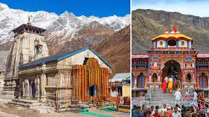

Nestled in the lap of the Himalayas, Uttarakhand is a state renowned for its majestic mountains, spiritual significance, and thrilling adventures. Here's a glimpse into what makes Uttarakhand a captivating destination:
Uttarakhand is blessed with some of the highest peaks in the world, including Nanda Devi, Trishul, and Kamet. Explore the scenic beauty of the Himalayas with treks to famous destinations like Valley of Flowers, Roopkund, and Kedarnath, offering breathtaking views of snow-capped mountains and alpine meadows.
Marvel at the majestic glaciers of Uttarakhand, including Gangotri Glacier and Pindari Glacier, which serve as the sources of sacred rivers like the Ganges and Yamuna.
Uttarakhand is known as the "Land of the Gods" and is dotted with numerous temples, ashrams, and spiritual retreats. Visit the sacred town of Haridwar, situated on the banks of the holy Ganges River, and witness the mesmerizing Ganga Aarti, a ritual of worship performed at dusk.
Embark on a pilgrimage to the Char Dham - Yamunotri, Gangotri, Kedarnath, and Badrinath - revered sites of Hindu pilgrimage nestled amidst the pristine Himalayas.
Experience adrenaline-pumping adventures amidst Uttarakhand's natural wonders. Go trekking, mountain biking, or paragliding in scenic locations like Rishikesh, Auli, and Nainital, offering thrilling experiences for adventure enthusiasts.
Indulge in water sports like river rafting, kayaking, and cliff jumping on the Ganges River, known as the "Adventure Capital of India," and feel the rush of excitement as you navigate through challenging rapids.
Uttarakhand is home to rich biodiversity and several national parks and wildlife sanctuaries. Explore the Jim Corbett National Park, India's oldest national park, and spot majestic wildlife such as tigers, elephants, and leopards in their natural habitats.
Discover the Valley of Flowers National Park, a UNESCO World Heritage Site, renowned for its vibrant floral diversity and breathtaking landscapes, offering a unique opportunity to witness nature's splendor.
Whether you seek spiritual enlightenment, adrenaline-pumping adventures, or serene getaways amidst nature, Uttarakhand offers a diverse range of experiences for every traveler. Plan your journey to this enchanting state and immerse yourself in the adventure and serenity of Uttarakhand.
